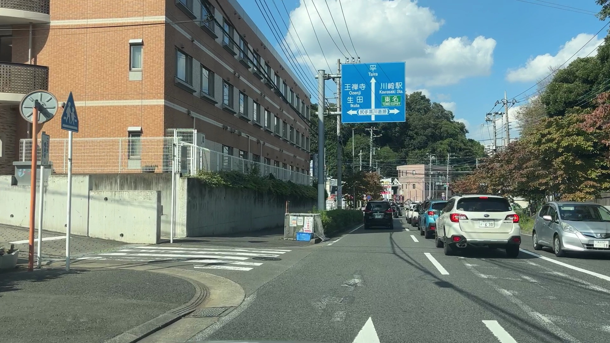
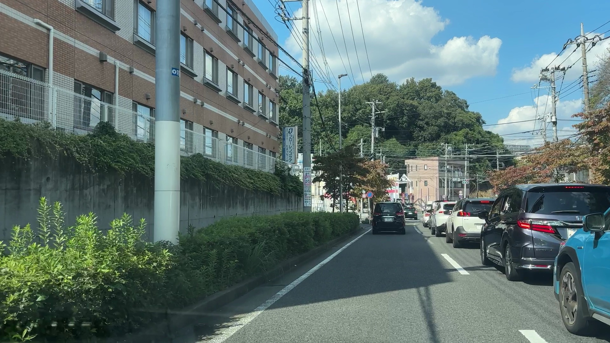
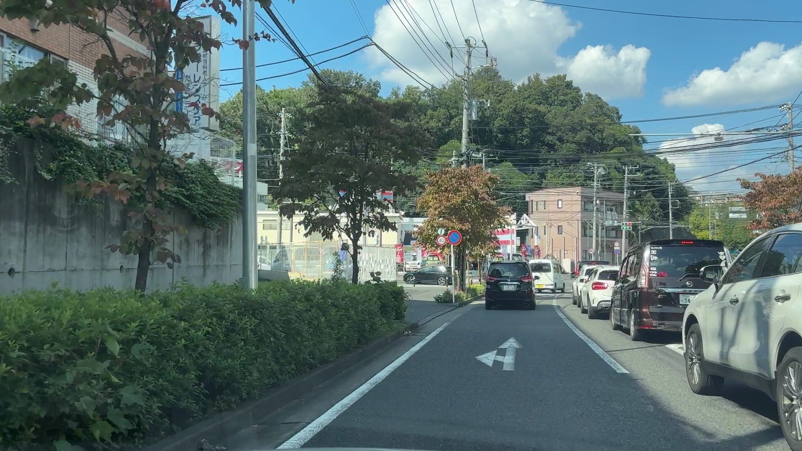
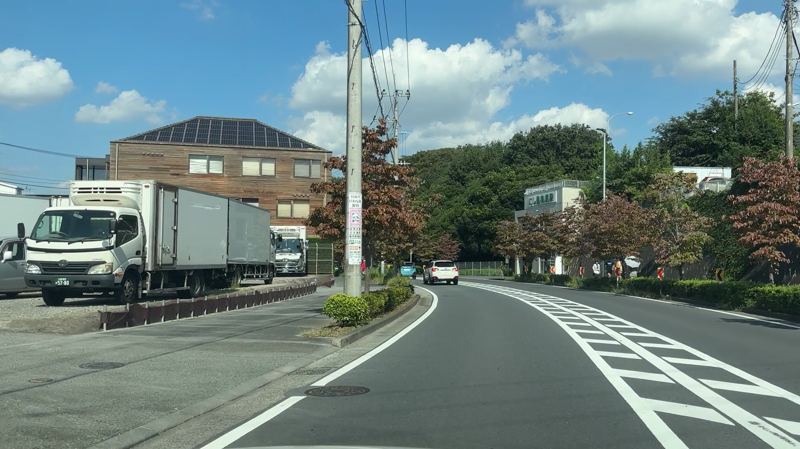

Video 2 Case 2
generated: 2025-09-08 14:11
Index
Language:
EN
JA
Images

frame_1031.jpg

frame_1114.jpg

frame_1198.jpg

frame_449.jpg
Description
この道路は、幹線道路としての移動効率性と沿道環境の調和を目指し設計されたと推測される。主たる対象利用者はドライバーであり、広めの車線や明確な案内標識がその意図を裏付ける。歩行者も歩道や横断歩道が整備され、一定の安全性が確保されている。ドライバーにとって移動効率性は高く、緑豊かな景観は視覚的な快適性を提供。安全性はガードレールや標識で配慮されているが、緩やかなカーブ区間では速度抑制が課題となる可能性もある。緊急時対応の柔軟性は、路肩待避所の不足により限定的。緑地や案内標識は適切に機能し、空間の質を高めている。この道路は、交通機能と周辺環境のバランスがとれており、地域に落ち着いた景観的価値を提供している。現状の空間特性は、幹線機能と地域住民の生活道路としての役割を概ね達成しており、機能性と現実の適合性は良好である。
Structured Output (image_analysis)
交通機能
車線数
2
信号機の有無
有り
標識の種類
速度制限, 駐車禁止, 案内, カーブ注意, 横断歩道
交差点の種類
T字路
車両の種類
乗用車, トラック, 物流車両
混雑状況
やや混雑
歩行者自転車
歩道の有無
有り
横断歩道の有無
有り
歩行者の特徴
高齢者が多い
安全防災
ガードレール
有り
街路灯
有り
防災標識
無し
路肩待避所
無し
環境情報
商業施設の有無
有り
学校の有無
無し
緑地の有無
有り
建物の高さ
低層
快適性
緑被
有り
ベンチの有無
無し
案内標識の有無
有り
モニュメントの有無
無し
劣化状態
路面マーキング視認性
鮮明
ゴミの有無
無し
路面の損傷
なし